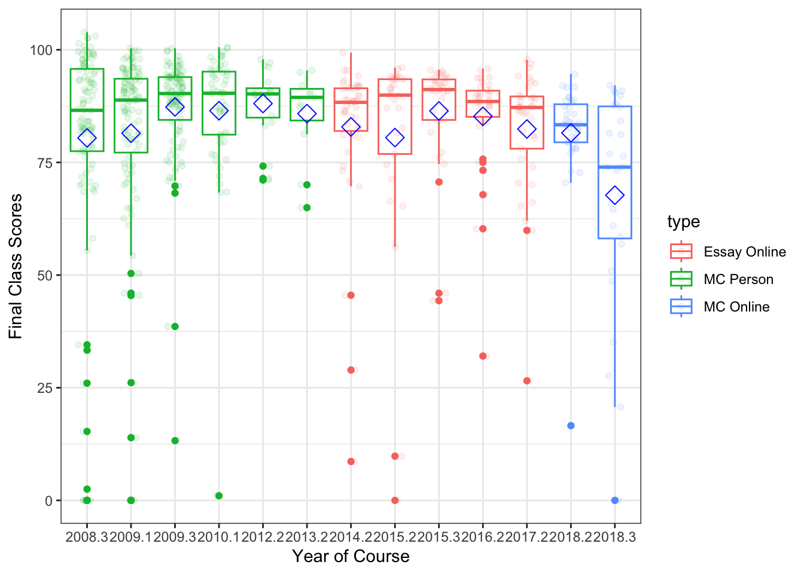

Are my intuitions about grades correct?
I was recently talking to a colleague about how utterly terrible my students were doing in my online class this semester and that nearly half were failing the class. We are in our last week of the semester, and I am completely over packing, so I thought I would examine if the judgments I had made about this semester are accurate.
First, I took all the times I had taught memory and cognition post Ph.D. (because I did teach it some in graduate school) and dumped the final scores into an excel sheet. Only one semesters worth of grades was lost in the ether but I have nearly 500 scores, so I think we’ll get the general picture.
Here’s a histogram of the data:
library(readxl)
master = read_excel("cognition_grades.xlsx")
library(ggplot2)
ggplot(master, aes(Score)) +
theme_bw() +
geom_histogram(fill = "white", color = "black") +
xlab("Final Class Score") +
ylab("Frequency")## `stat_bin()` using `bins = 30`. Pick better value with `binwidth`.In general, it’s a pretty bimodal distribution with lots of good grades. Maybe I’m too nice - I do give lots of easy 0/100 grades for taking classic cognitive experiments, but consistently the exams are worth 50-70% of a student’s grade.
Let’s see this semester’s distribution (with the caveat that it’s not over yet, but grades don’t tend to change that much at the end with one test left):
ggplot(master[master$Year == "2018.3" , ], aes(Score)) +
theme_bw() +
geom_histogram(fill = "white", color = "black") +
xlab("Final Class Score") +
ylab("Frequency") +
coord_cartesian(xlim = c(0,100))## `stat_bin()` using `bins = 30`. Pick better value with `binwidth`.The distribution itself doesn’t appear to be too different, but something is awry with the scores, as the do appear to be lower than my normal overall scores. Let’s compare everything ever to this semester:
#everything but this semester
mean(master$Score[master$Year != "2018.3"])## [1] 83.62371#this semester
mean(master$Score[master$Year == "2018.3"])## [1] 67.7274783 versus 68 is a nearly 15 point difference, so my thoughts are somewhat supported here. We can also bin the scores and see if there is a difference across what would be considered traditional ABCDF bins:
master$Letter = NA
master$Letter[master$Score < 60] = "F"
master$Letter[master$Score > 60 & master$Score < 70] = "D"
master$Letter[master$Score > 70 & master$Score < 80] = "C"
master$Letter[master$Score > 80 & master$Score < 90] = "B"
master$Letter[master$Score > 90] = "A"
master$tempyear = master$Year > 2018.25
table(master$tempyear, master$Letter)##
## A B C D F
## FALSE 257 197 84 26 35
## TRUE 4 7 5 4 8chisq.test(master$tempyear, master$Letter)##
## Pearson's Chi-squared test
##
## data: master$tempyear and master$Letter
## X-squared = 31.73, df = 4, p-value = 2.172e-06chisq.test(master$tempyear, master$Letter)$residuals## master$Letter
## master$tempyear A B C D F
## FALSE 0.4848125 0.1511463 -0.1112164 -0.4969220 -0.9485746
## TRUE -2.2423748 -0.6990882 0.5144026 2.2983842 4.3873863The table denotes what the histograms were telling us - this distribution is much more uniform than my normal distribution. The chisquare test tells me (one to be careful of small samples!) but also that the scores appear different. The residuals indicate we see much more Ds and Fs than normal.
So what is going on? I’ve actually coded these with a couple more variables, to help determine what might be influencing the data. First, a visualization across years (and I chopped it off at 50 to make this graph work):
ggplot(master, aes(Score)) +
geom_histogram() +
facet_wrap( ~ Year, ncol=4) +
theme_bw() +
xlab("Final Class Score") +
ylab("Frequency") +
coord_cartesian(xlim = c(50,100)) +
geom_vline(xintercept = 70, color = "red") +
geom_vline(xintercept = 80, color = "blue") +
geom_vline(xintercept = 90, color = "green") ## `stat_bin()` using `bins = 30`. Pick better value with `binwidth`.It’s hard to compare completely because class size is pretty different from some of these, but I’ve identified two variables that might be a culprit (other than student factors). First, I’ve taught both face to face and completely online. Second, I’ve used multiple choice and essay style exams. Let’s see what happens in each of those groups (not completely crossed unfortunately … I think I’ve only used the essay tests online, although some of the early years might have been a mixed short answer and multiple choice test, it’s been 10 years and I can’t quite remember).
#Split by test type
ggplot(master, aes(Score)) +
geom_histogram() +
facet_wrap( ~ MC) +
theme_bw() +
xlab("Final Class Score") +
ylab("Frequency") ## `stat_bin()` using `bins = 30`. Pick better value with `binwidth`.#Split by "is it online"
ggplot(master, aes(Score)) +
geom_histogram() +
facet_wrap( ~ Online) +
theme_bw() +
xlab("Final Class Score") +
ylab("Frequency") ## `stat_bin()` using `bins = 30`. Pick better value with `binwidth`.The histograms in these cases aren’t too telling because of course size differences in here, so let’s just calculate the means for each group combination:
tapply(master$Score, list(master$MC, master$Online), mean)## No Yes
## Essay NA 83.51651
## MC 83.86057 75.41040In looking at the means, we can see that students in my multiple choice tests classes online are performing nearly a whole letter grade below the students in either online essay or in person multiple choice. Here’s the kicker - these online multiple choice tests are unproctored open book. Let that sink in for a moment.
Last, I’ll show you changes across years to see if it’s a sudden thing or what. Here’s a box plot of each semester (points are grades jittered and set transparent-ish to see better). The blue diamond indicates the mean for that class. The years are listed with decimals to remind me which semester that was, but I consistently taught the course about 1-2 times a year. So, I colored the box with the type of combination of the course.
master$type = paste(master$MC, master$Online, sep = " ")
master$type = factor(master$type,
levels = names(table(master$type)),
labels = c("Essay Online", "MC Person", "MC Online"))
ggplot(master, aes(as.factor(Year), Score, color = type)) +
geom_boxplot() +
theme_bw() +
geom_jitter(position=position_jitter(0.2), alpha = .1) +
stat_summary(fun.y=mean, geom="point", shape=23, size=4, color = "blue") +
xlab("Year of Course") +
ylab("Final Class Scores")## Warning: `fun.y` is deprecated. Use `fun` instead.
So, the short answer is that things appear to have run off the rails especially this semester, and I my intuitions appear somewhat correct about how students seem to do worse with ostensibly easier tests. Also, a large chunk of this semester poor scoring is likely due to students just not turning anything in - don’t have the time to dig into the assignment level data to determine if that’s more than normal (but likely it’s a culprit as well). The switch in the last two semesters back to multiple choice tests was because I was tired of filling out academic integrity forms - sometimes up to 10 incidents a semester on these essay tests. Not sure that it helped anyone but me though!